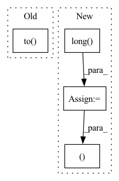

Pattern ID :32542

Before Change
substitute_input_shape,
victim_input_targets,
)
x = x.to(torch.float32)
// import pdb
// pdb.set_trace()
config = set_evasion_model(query, victim_input_shape, victim_input_targets)
After Change
result = result.clone().detach()
print(result.shape)
y = torch.Tensor([query(x) for x in result])
y = y.long()
return result, y
In pattern: SUPERPATTERN
Frequency: 4
Non-data size: 4
Instances
Fragment ID: 94759925
Project Name: trailofbits/privacyraven
Commit Name: ce663f3b0895905a2731bf1907af06f1f99fbb12
Time: 2020-10-21
Author: suhashussain1@gmail.com
File Name: src/privacyraven/extraction/synthesis.py
M Class Name: AnonimousClass
N Class Name: AnonimousClass
M Method Name: hopskipjump(6)
N Method Name: hopskipjump(6)
M Parent Class:
N Parent Class:
M File Name: src/privacyraven/extraction/synthesis.py
N File Name: src/privacyraven/extraction/synthesis.py
M Start Line: 159
M End Line: 175
N Start Line: 118
N End Line: 144
'>
Before Change
lx, ly, lz = len(xs), len(ys), len(zs)
// construct points
xx, yy, zz = custom_meshgrid(xs, ys, zs)
world_xyzs = torch.cat([xx.reshape(-1, 1), yy.reshape(-1, 1), zz.reshape(-1, 1)], dim=-1).unsqueeze(0).to(count.device) // [1, N, 3]
// cascading
for cas in range(self.cascade):
After Change
// construct points
xx, yy, zz = custom_meshgrid(xs, ys, zs)
coords = torch.cat([xx.reshape(-1, 1), yy.reshape(-1, 1), zz.reshape(-1, 1)], dim=-1) // [N, 3], in [0, 128)
indices = raymarching.morton3D(coords).long() // [N]
world_xyzs = (2 * coords.float() / (self.grid_size - 1) - 1).unsqueeze(0) // [1, N, 3] in [-1, 1]
// cascading
for cas in range(self.cascade):
bound = min(2 ** cas, self.bound)
half_grid_size = bound / self.grid_size
// scale to current cascade"s resolution
cas_world_xyzs = world_xyzs * (bound - half_grid_size)
// split batch to avoid OOM
head = 0
while head < B:
tail = min(head + S, B)
// world2cam transform (poses is c2w, so we need to transpose it. Another transpose is needed for batched matmul, so the final form is without transpose.)
cam_xyzs = cas_world_xyzs - poses[head:tail, :3, 3].unsqueeze(1)
cam_xyzs = cam_xyzs @ poses[head:tail, :3, :3] // [S, N, 3]
// query if point is covered by any camera
mask_z = cam_xyzs[:, :, 2] > 0 // [S, N]
mask_x = torch.abs(cam_xyzs[:, :, 0]) < cx / fx * cam_xyzs[:, :, 2] + half_grid_size * 2
mask_y = torch.abs(cam_xyzs[:, :, 1]) < cy / fy * cam_xyzs[:, :, 2] + half_grid_size * 2
mask = (mask_z & mask_x & mask_y).sum(0).reshape(-1) // [N]
// update count
count[cas, indices] += mask
head += S
// mark untrained grid as -1
'>
Fragment ID: 94759924
Project Name: ashawkey/torch-ngp
Commit Name: f02ec4824ef16a650c5a4acac510ec6c224a4337
Time: 2022-06-02
Author: ashawkey1999@gmail.com
File Name: nerf/renderer.py
M Class Name: NeRFRenderer
N Class Name: NeRFRenderer
M Method Name: mark_untrained_grid(4)
N Method Name: mark_untrained_grid(4)
M Parent Class: nn.Module
N Parent Class: nn.Module
M File Name: nerf/renderer.py
N File Name: nerf/renderer.py
M Start Line: 397
M End Line: 438
N Start Line: 397
N End Line: 439
'>
Before Change
substitute_input_shape,
victim_input_targets,
)
x = x.to(torch.float32)
import pdb
pdb.set_trace()
config = set_evasion_model(query, victim_input_shape, victim_input_targets)
After Change
result = result.clone().detach()
print(result.shape)
y = torch.Tensor([query(x) for x in result])
y = y.long()
return result, y
'>
Fragment ID: 94759923
Project Name: trailofbits/privacyraven
Commit Name: dd71a208fe41d3cb3854115c2ce4d4318b3d52e0
Time: 2020-10-21
Author: suhashussain1@gmail.com
File Name: src/privacyraven/extraction/synthesis.py
M Class Name: AnonimousClass
N Class Name: AnonimousClass
M Method Name: hopskipjump(6)
N Method Name: hopskipjump(6)
M Parent Class:
N Parent Class:
M File Name: src/privacyraven/extraction/synthesis.py
N File Name: src/privacyraven/extraction/synthesis.py
M Start Line: 139
M End Line: 155
N Start Line: 118
N End Line: 144
'>
Before Change
// add noise in [-hgs, hgs]
cas_xyzs += (torch.rand_like(cas_xyzs) * 2 - 1) * half_grid_size
// query density
sigmas = self.density(cas_xyzs.to(tmp_grid.device))["sigma"].reshape(lx, ly, lz).detach()
// from `scalbnf(MIN_CONE_STEPSIZE(), 0)`, check `splat_grid_samples_nerf_max_nearest_neighbor`
// scale == 2 * sqrt(3) / 1024
sigmas *= self.density_scale * 0.003383
After Change
// construct points
xx, yy, zz = custom_meshgrid(xs, ys, zs)
coords = torch.cat([xx.reshape(-1, 1), yy.reshape(-1, 1), zz.reshape(-1, 1)], dim=-1) // [N, 3], in [0, 128)
indices = raymarching.morton3D(coords).long() // [N]
xyzs = 2 * coords.float() / (self.grid_size - 1) - 1 // [N, 3] in [-1, 1]
// cascading
for cas in range(self.cascade):
bound = min(2 ** cas, self.bound)
half_grid_size = bound / self.grid_size
// scale to current cascade"s resolution
cas_xyzs = xyzs * (bound - half_grid_size)
// add noise in [-hgs, hgs]
cas_xyzs += (torch.rand_like(cas_xyzs) * 2 - 1) * half_grid_size
// query density
sigmas = self.density(cas_xyzs)["sigma"].reshape(-1).detach()
// from `scalbnf(MIN_CONE_STEPSIZE(), 0)`, check `splat_grid_samples_nerf_max_nearest_neighbor`
// scale == 2 * sqrt(3) / 1024
sigmas *= self.density_scale * 0.003383
// assign
tmp_grid[cas, indices] = sigmas
// ema update
'>
Fragment ID: 94759919
Project Name: ashawkey/torch-ngp
Commit Name: f02ec4824ef16a650c5a4acac510ec6c224a4337
Time: 2022-06-02
Author: ashawkey1999@gmail.com
File Name: nerf/renderer.py
M Class Name: NeRFRenderer
N Class Name: NeRFRenderer
M Method Name: update_extra_state(3)
N Method Name: update_extra_state(3)
M Parent Class: nn.Module
N Parent Class: nn.Module
M File Name: nerf/renderer.py
N File Name: nerf/renderer.py
M Start Line: 454
M End Line: 488
N Start Line: 461
N End Line: 490